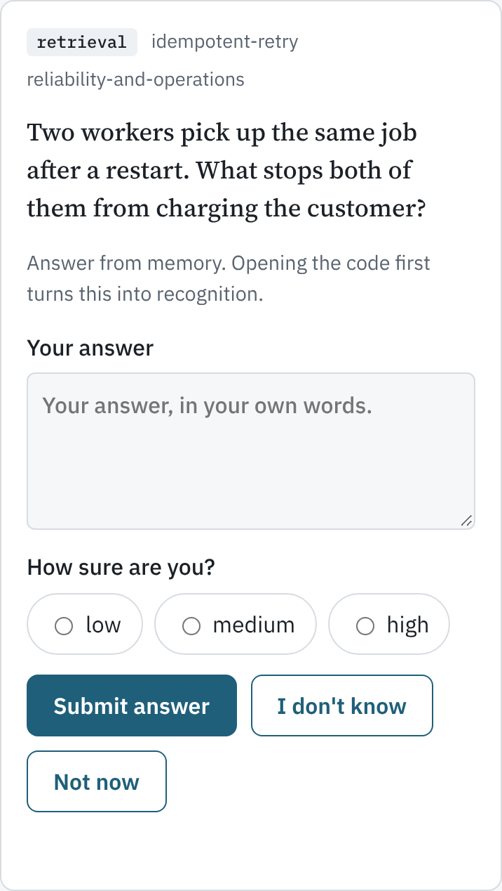
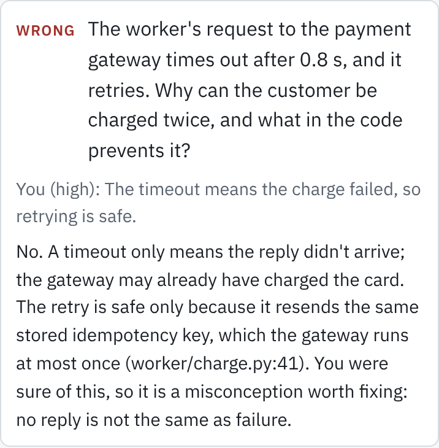

Build with an agent. Keep getting better yourself.
An Agent Skill for working on a real project with an AI agent while your own engineering grows, rather than quietly eroding. The agent does most of the building. At a few chosen points, you do the thinking.
Open source under the MIT licence. Works in any harness that supports Agent Skills and can run Python 3.10 and git.
The rule everything follows
You commit to an answer, and say how sure you are, before anything is revealed. Try it on an example question.
A worker sends a charge to a payment gateway. Its timeout is 0.8 s; the gateway replies after 1.2 s. The worker retries without an idempotency key. What does the customer see?
A timeout only means the reply didn't arrive. The gateway finished the first charge anyway, and without a key it cannot tell the retry from a new purchase.
Students who watched a demonstration understood it no better than students who never saw it; those who predicted the outcome first understood it significantly better (Crouch et al., 2004). That is why nothing here explains before you answer.
How it works
- Before a learning task, you predict.One question: sketch the design, name the invariant, or say where it will break. The expected answer is written from the code first.
- While the agent builds, nothing stops.If you're away, it posts a question and keeps going. Writing the critical piece yourself, or diagnosing a bug first, is offered once and never forced.
- After it works, you explain it back.In your own words, before the agent summarises anything. Feedback says what held, what didn't, and where in the code to look.
- Later, it comes back.Due topics return on a spaced schedule, batched, mixed across dimensions: recall first, then cases you haven't seen.
Answer wherever you are
| Route | Grading | Needs |
|---|---|---|
| In chat with the agent | Immediate | Nothing extra |
In a terminal: learning.py answer | At the next checkpoint | Python |
Local page: learning.py serve | At the next checkpoint; shows up within seconds | Python; a tunnel to reach it from a phone |
| Hosted private page | Immediate, on the page | A harness that can publish one, such as claude.ai |


What every question follows
- The expected answer is fixed from the code before you see the question.
- You give a confidence with every answer. Confident wrong answers are reported as misconceptions.
- Hints come one rung at a time, and only before you commit.
- Feedback opens with the outcome, responds to your reasoning, cites the code, and never praises.
- "I don't know", "Not now", "skip" and "just do it" always work.
What the record keeps
A folder in your repository, one file per topic and per attempt, so records from separate sessions merge cleanly in git. For each topic it keeps two things apart: the highest level you have ever demonstrated, and the current evidence from your latest review. A topic you once explained perfectly and then failed last week shows as uncertain. Work you did alone counts only when there is a commit, test or trace to inspect.
Why it is built this way
Each rule traces to a finding. Most of these studies used students or junior developers on short tasks, so treat the design as a hypothesis to test on yourself. The record is built to let you do that.
How you use AI matters more than whether you use it. In Anthropic's randomised study of 52 developers learning a new library, the AI-assisted group scored 50% on a follow-up quiz against 67% for hand-coders, with the largest gap on debugging. Asking conceptual questions, or questioning generated code, kept scores high; full delegation and letting the AI debug lost the most (Shen and Tamkin, 2026).
So conceptual questions are answered freely, you explain generated code back, and you get first go at bugs.
Unguarded help raises practice scores and lowers later unaided ones. Students with plain ChatGPT did 17% worse once it was removed; a tutor that gave hints rather than answers removed most of the harm (Bastani et al., 2025).
So hints come one rung at a time, and no question shares a message with its answer.
Testing before teaching helps, even when the answer is wrong (Pan and Carpenter, 2023; Kapur, 2014).
So you predict before a learning task and before every explanation.
Explaining to yourself helps: g = 0.55 across 64 reports on prompted self-explanation (Bisra et al., 2018).
So you explain each change back, and restate the idea after a miss.
Retrieval, spaced out, makes things stick (Roediger and Karpicke, 2006; Cepeda et al., 2008), and transfers to new cases better with elaborated feedback (Pan and Rickard, 2018).
So topics return on a growing schedule, moving from recall to cases you haven't seen.
Confident errors are the ones most likely to be corrected (Butterfield and Metcalfe, 2001), and feeling you understood is a poor guide to whether you did (Deslauriers et al., 2019).
So every answer carries a confidence, and confident wrong answers are surfaced.
Feedback works on average but varies widely; informative feedback works best: d = 0.48 (Wisniewski et al., 2020).
So feedback says what was missing and cites the code, rather than only right or wrong.
What learners do with a visualisation matters more than what it shows (Hundhausen et al., 2002), and animation beats static pictures only modestly: d = 0.37 (Höffler and Leutner, 2007; Tversky et al., 2002).
So explainer pages are built from questions you must answer, and step through discrete frames at your own pace.
Guidance that helps a novice can slow down an expert (Kalyuga et al., 1998; Kalyuga, 2007).
So worked examples appear only where your record shows you are new to an area.
Programming tasks have an order: tracing and explaining code predicted writing it (Lopez et al., 2008; the strict hierarchy has been questioned since), and ordering tasks gave the same gains as writing code in less time (Ericson et al., 2017).
So unfamiliar code goes trace, then explain, then modify.
What it costs
Measured once, on three due topics with the same scripted answers (one right, one confidently wrong, one partial), counting every model request.
| Practice run | Requests | Your replies | Weighted tokens |
|---|---|---|---|
| One question at a time, fresh session | 21 | 5 | 318k |
| Batched, fresh session (current) | 11 | 2 | 223k |
| One at a time, after a long build context | 16 | 5 | 401k |
Weighted tokens count cache writes at 1.25, cache reads at 0.1 and output at 5 times the input price. Single runs with a simulated learner who replied within seconds; real replies minutes later can find the cache expired, which makes fewer replies worth more. An interactive explainer page cost about 138k tokens on its own, so the skill builds one only when you ask or chat has failed twice.
Install
In Claude Code:
/plugin marketplace add 0xfauzi/explain-pr
/plugin install learning-while-building@learning-while-buildingThen, in your project, say "make this a learning task", "quiz me", "help me understand what PR 128 did", or "what am I weak at". The first run creates .learning/ in the repository: commit it.
Other harnesses that support Agent Skills can use skills/learning-while-building/ from the repository directly.
What it cannot do
- Grading is the agent's judgement against a rubric it wrote. The record is evidence, not a certificate.
- Nothing reminds you. Reviews happen when you run the skill.
- The review intervals (1, 3, 7, 21, 60 and 180 days) are starting values; the record shows how well they fit you.
- Whether it makes you a better engineer is not yet measured on real projects. The record is how you find out.